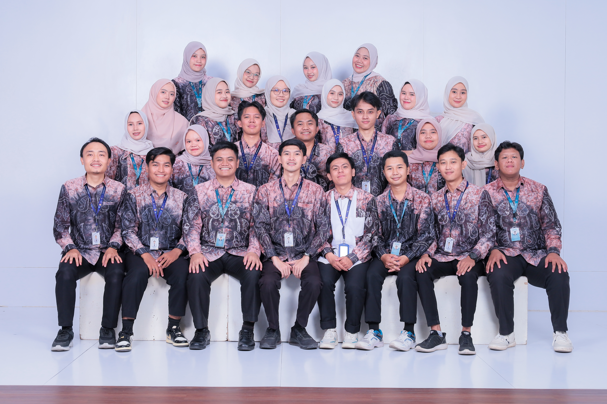
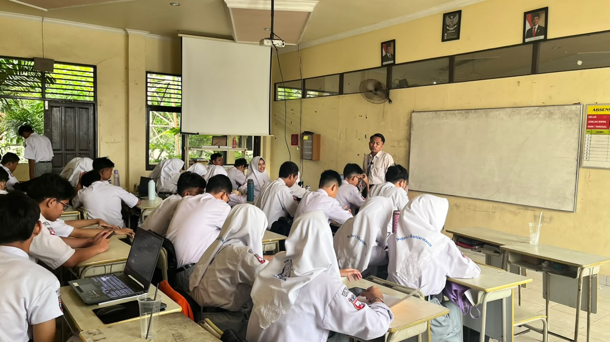
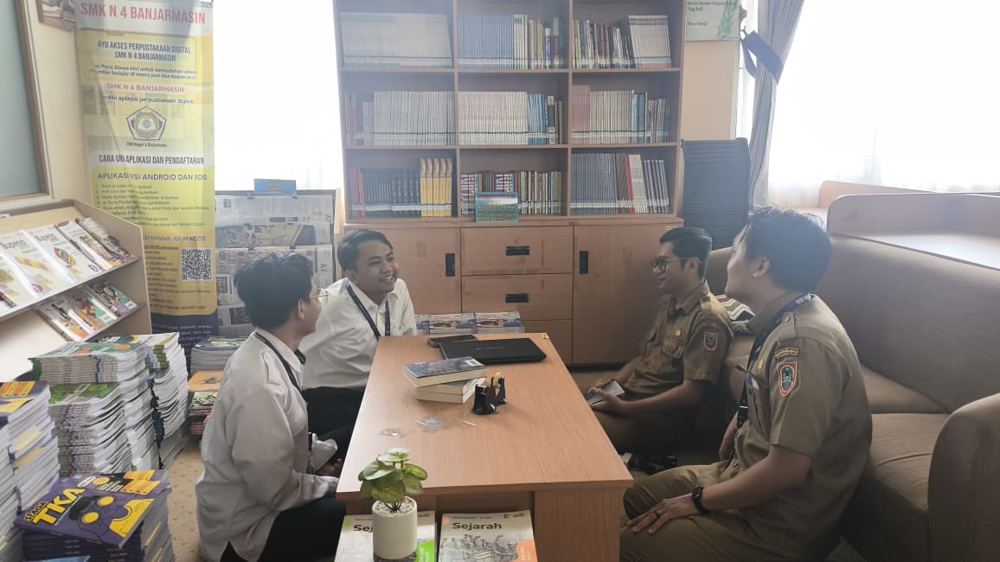
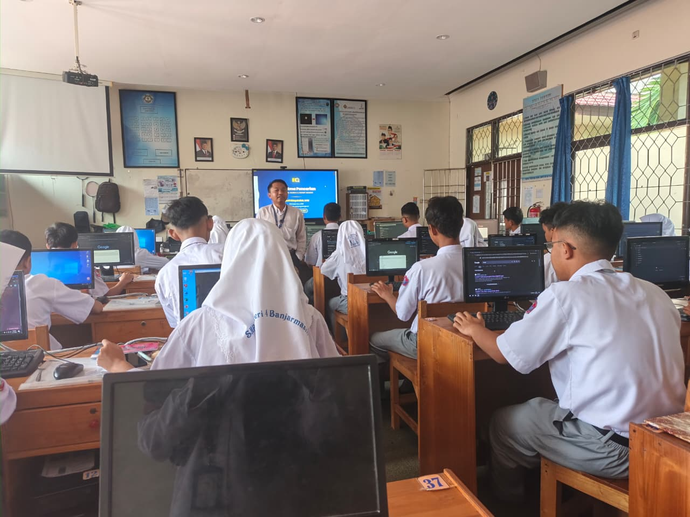

Seminar PPG | Refleksi Program PPG

Mahasiswa PPG : Syarif Hidayatullah, S.Pd
Dosen Pembimbing : Nuruddin Wiranda, S.Kom., M.Cs
Telusuri halaman portofolio di bawah ini.
Mengenal lebih dekat calon guru yang adaptif, reflektif, dan berkomitmen pada pendidikan berkualitas.

Syarif Hidayatullah, lahir dan besar di Abung Wirajaya, Kecamatan Limpasu, Kabupaten Hulu Sungai Tengah, Kalimantan Selatan — sebuah daerah yang menyimpan pesona alam perbukitan yang menghijau, udara pegunungan yang segar, dan hamparan sawah yang membentang luas. Masyarakat di sana dikenal dengan kearifan lokal yang kuat, hidup dalam ikatan kekeluargaan yang erat, serta menjunjung tinggi nilai-nilai religius dan semangat gotong royong yang diwariskan secara turun-temurun.
Sejak kecil, saya dibesarkan dalam lingkungan yang sederhana namun kaya akan nilai-nilai kehidupan, di mana setiap warga saling membantu dan menghargai satu sama lain dalam suka maupun duka. Latar belakang inilah yang membentuk karakter saya sebagai pribadi yang adaptif, reflektif, dan peduli terhadap sesama — nilai-nilai yang saya bawa dalam perjalanan menjadi calon guru Informatika.
Apam Barabai, Lamang, Kue Lam
Batumbang Apam, Aruh Adat, Tari Surung Apam, Musik Panting
Tugu Burung Anggang, Riam Bajandik & Pulau Mas, Manggasang
Huma Betang, Semangat Gotong Royong, Mufakat & Religius
"Menjadi pendidik Informatika yang profesional, adaptif, dan inspiratif — mampu membimbing peserta didik menguasai teknologi digital secara bijak, berkarakter, dan berdaya saing, serta berkontribusi nyata dalam mewujudkan pendidikan Indonesia yang merata, bermakna, dan berlandaskan nilai-nilai Pancasila."
Merancang pembelajaran Informatika yang kontekstual, berpusat pada murid, dan mengintegrasikan teknologi dengan kebutuhan nyata peserta didik.
Menerapkan pembelajaran berdiferensiasi berbasis pemetaan ZPD dan scaffolding bertahap agar setiap murid berkembang sesuai kemampuannya.
Menanamkan nilai kejujuran, tanggung jawab, gotong royong, dan keadilan sosial dalam setiap kegiatan pembelajaran.
Membangun kelas yang mendorong pola pikir bertumbuh, menormalisasi kesalahan sebagai bagian dari belajar, dan menguatkan 'The Power of Yet'.
Membangun komunikasi aktif dengan keluarga dan masyarakat sebagai bagian dari ekosistem pendidikan yang mendukung tumbuh kembang murid.
Terus belajar, berefleksi, dan beradaptasi melalui inkuiri kolaboratif bersama rekan sejawat, guru pamong, dan dosen pembimbing.
"Pendidikan adalah daya upaya untuk memajukan bertumbuhnya budi pekerti, pikiran, dan tubuh anak."
— Ki Hadjar Dewantara
Lembar Kerja 3 (LK 3): Refleksi
Pengalaman Belajar Selama Mengikuti Program PPG.
Kristalisasi pengalaman dan komitmen masa depan.
Setelah menempuh perjalanan panjang refleksi di Semester I dan Semester II, saya menyadari bahwa pendidikan di Indonesia seharusnya tidak lagi berorientasi pada sekadar transfer pengetahuan, melainkan transformasi nilai dan karakter.
Pendidikan harus menjadi ruang yang inklusif, di mana setiap anak—terlepas dari latar belakang sosial-ekonominya—mendapatkan kesempatan yang setara untuk berkembang. Melalui pemahaman Teori Ekologi Bronfenbrenner dan nilai keadilan sosial Pancasila, saya sadar bahwa sekolah tidak bisa bekerja sendiri; pendidikan harus menyentuh tri pusat pendidikan: keluarga, sekolah, dan masyarakat.
Selain itu, pendidikan di Indonesia seharusnya kontekstual dan berpihak pada murid (student-centered). Pembelajaran tidak boleh tercerabut dari akar budaya dan lingkungan sekitar. Seperti yang saya pelajari di mata kuliah Inovasi Pendidikan di Lahan Basah, memanfaatkan kearifan lokal (seperti ekosistem rawa gambut) sebagai sumber belajar terbukti mampu membuat murid lebih antusias. Pendidikan harus menghasilkan generasi yang cerdas secara akademik, memiliki Growth Mindset, dan peduli lingkungan.


Saya menyadari bahwa untuk menjadi guru profesional, saya harus bertransformasi dari sekadar "pengajar" menjadi "pemimpin pembelajaran" yang reflektif dan adaptif. Hal ini saya buktikan melalui Praktik Pengalaman Lapangan (PPL) Mandiri, di mana saya tidak hanya dituntut menguasai materi, tetapi juga harus mampu mengelola kelas yang heterogen.
Untuk itu, saya harus terus mengasah kompetensi pedagogik dan profesional saya. Saya perlu membiasakan diri melakukan asesmen diagnostik di awal pembelajaran, menerapkan pembelajaran berdiferensiasi (TaRL), dan merancang aktivitas yang menantang. Saya akan memadukan PBL (Problem-Based Learning) untuk melatih murid memecahkan masalah nyata, serta PjBL (Project-Based Learning) agar murid menghasilkan karya nyata.
Selain itu, guru profesional adalah guru yang tidak pernah berhenti belajar. Saya harus konsisten melakukan refleksi berkelanjutan (seperti jurnal harian) dan aktif berkolaborasi dalam komunitas belajar guru. Saya juga harus menjadi teladan dalam regulasi emosi (PSE), karena keteladanan adalah kurikulum tersembunyi yang paling efektif.

Tiga hal krusial yang akan saya lakukan saat pertama kali terjun mengajar adalah:
Saya akan memastikan untuk mengenal karakteristik, minat, latar belakang emosi, dan kemampuan awal murid melalui asesmen awal. Hal ini agar saya tidak menyamaratakan perlakuan dan bisa merancang strategi yang tepat sejak hari pertama.
Saya berkomitmen untuk tidak melulu mengajar di dalam kelas dengan ceramah. Saya akan merancang pembelajaran Informatika yang mengaitkan teknologi dengan masalah nyata di sekitar sekolah (PBL). Dari pemecahan masalah tersebut, saya akan mengarahkan murid untuk membuat sebuah proyek nyata (PjBL), seperti aplikasi sederhana atau infografis data, sehingga belajar menjadi bermakna.
Saya akan aktif berkomunikasi dengan orang tua murid (tri pusat pendidikan) dan berkolaborasi dengan guru-guru senior untuk berbagi praktik baik, seperti mengadakan pelatihan teknologi AI di sekolah.
